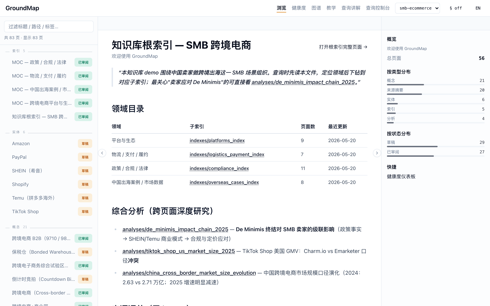
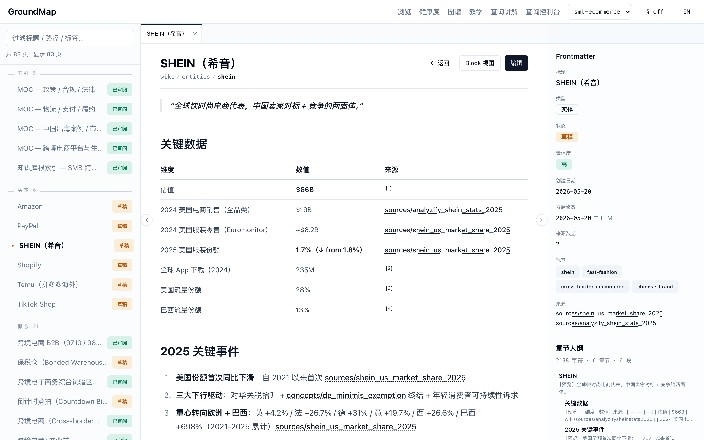
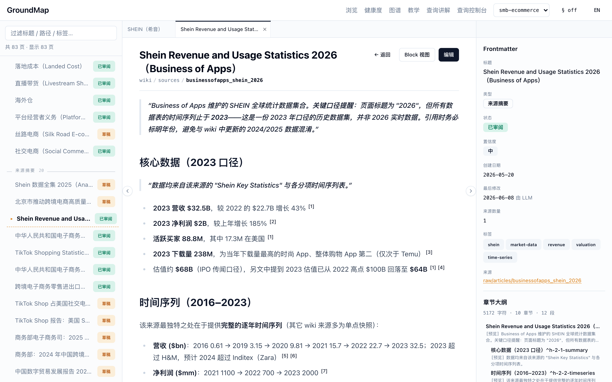
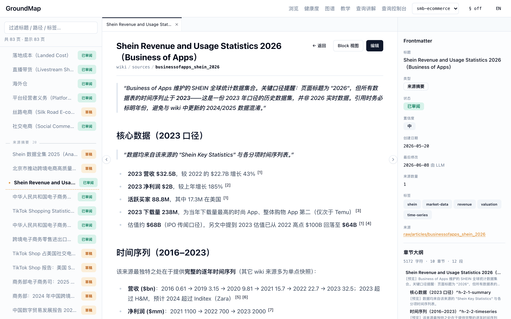
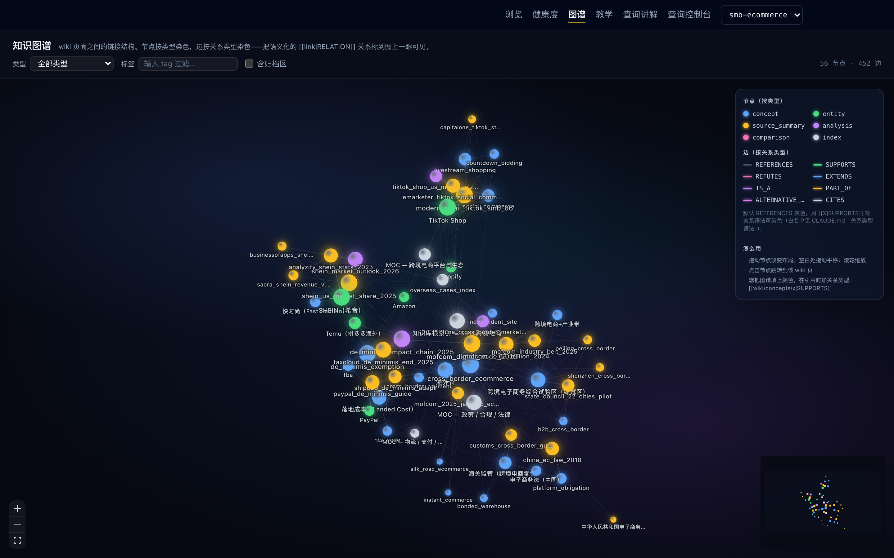
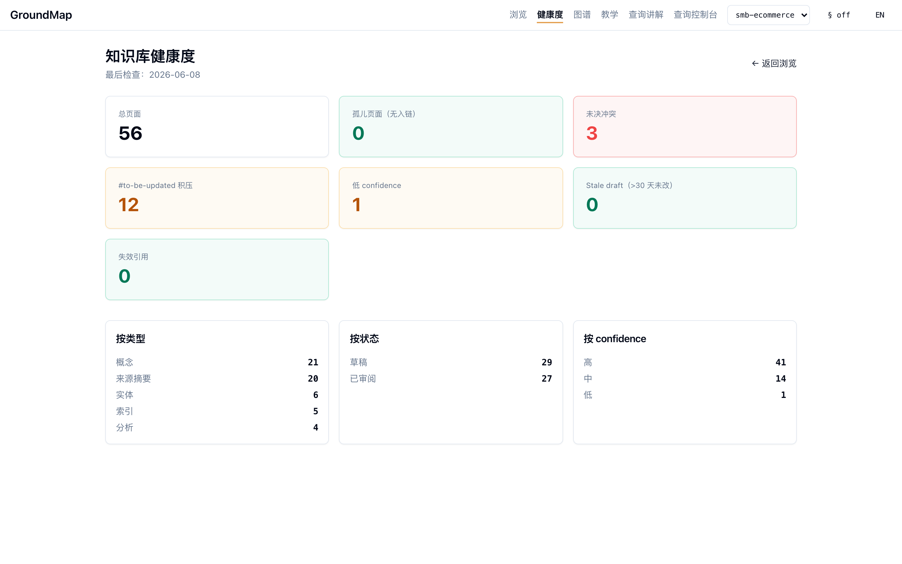
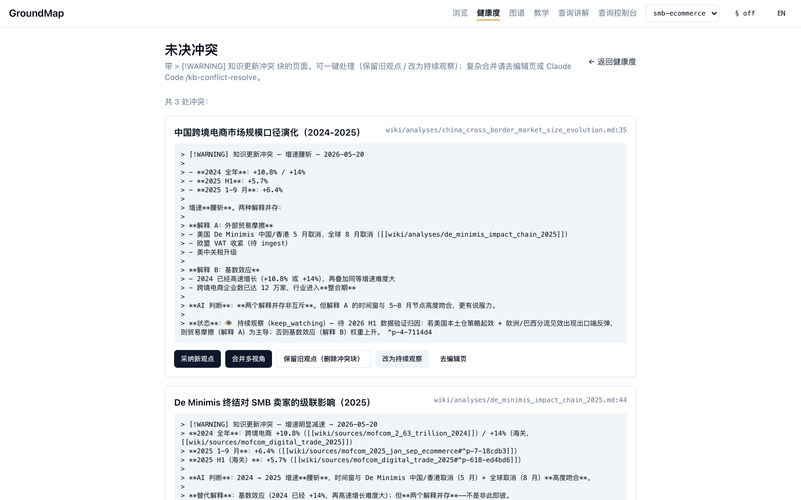

手把手搭建并使用 GroundMap 知识库（零基础图文教程）#
这份教程写给完全没接触过这个项目的新手。读完你会明白：这个知识库是一步一步怎么搭起来的、搭好以后怎么用、怎么转。全程配真实截图，并用完整案例从头走到尾——既有现成的讲解案例（一篇 SHEIN 统计报告如何变成可追溯的知识），也有配套示例文章让你亲手跟做一遍，最后教你从零开一个自己主题的库。
需要的基础：几乎为零。你只要会在终端里复制粘贴命令、会用浏览器即可。看不懂的名词，文中第一次出现时都会用大白话解释。
1. 先建立直觉：GroundMap 到底是什么#
先别管代码。用一个比喻就懂了：
GroundMap = 一座图书馆 + 一位 AI 管理员 + 一本永远可追溯的笔记本。
- 你：往图书馆塞原始资料（论文、报告、网页、政策文件……），并提问。
- AI 管理员（外部 agent，比如 Claude Code）：读这些原始资料，把要点整理成结构化的 wiki 笔记，而且每一句话都标明出处（来自哪份资料的哪一段）。
- 系统本身（
scripts/里的k.py+web/网页台）：只负责给工具——转换格式、加书签（锚点）、搜索、画关系图、体检——它自己从不思考、不调用任何 AI。
三个"铁规矩"，理解它们就理解了整个设计#
| 规矩 | 大白话 | 为什么 |
|---|---|---|
| markdown + Git 是唯一真相 | 所有知识就是一堆纯文本 .md 文件，用 Git 存。删掉所有代码、所有缓存，知识本身还在、还能读。 |
永不被某个工具/某个模型"锁死"。十年后用记事本也能打开。 |
| 系统不调用 LLM、不用 embedding | 知识库自己不接 AI、不做"向量召回"。检索靠全文关键词 + 元数据过滤 + 让 agent 读完整页面。 | 可解释、可复现、零幻觉风险。详见 why-no-embeddings.md。 |
| 每条论断必须能溯源 | wiki 里写"SHEIN 估值 660 亿美元"，后面必须挂一个链接，精确指向原始报告的那一段。 | 知识可信、可核查，而不是"AI 说的，不知道哪来的"。 |
📌 和传统 RAG 的关键区别：常见的"chunk + embedding" RAG 把文档切碎、转成向量，检索时返回一些零碎片段，换个模型就得全量重算。GroundMap 反过来——永远返回完整页面或完整章节，知识以人能读懂的 markdown 形式沉淀下来，不进任何"换模型就作废"的黑盒。
记住这个三角关系，下面的一切都顺理成章：
┌─────────────┐ 放资料 / 提问 ┌──────────────────────┐
│ 你 │ ───────────────▶ │ AI 管理员（外部 agent） │
└─────────────┘ │ 读资料 → 写 wiki │
▲ │ 每句话都标出处 │
│ 看 wiki / 图谱 / 体检 └───────────┬──────────┘
│ │ 用工具
┌─────┴───────────────────────────────────────▼──────┐
│ 系统（k.py + 网页台）：转换 / 锚点 / 搜索 / 图谱 / 体检 │
│ —— 只给工具，自己从不调用 AI │
└────────────────────────────────────────────────────┘
2. 5 分钟把它跑起来#
2.1 前置条件#
装好这几样（装过就跳过）：
- Python 3.10 以上
- Node.js 20 以上 + npm
- Git
- 一个 AI 编程助手（第 4 章摄入资料时才用到，可以先装好）：推荐 Claude Code——在终端运行
npm install -g @anthropic-ai/claude-code安装，之后在任意目录输入claude即可进入对话。用 Cursor、Codex 等其他 agent 也完全可以。
💡 小贴士： - 本文所有命令里的
python，在部分系统（如 macOS 自带环境）上叫python3。如果敲python提示 command not found，就把命令里的python换成python3，其余不变。 -make在 macOS / Linux 一般自带；Windows 用户建议在 WSL 里操作，或直接用下文给出的"手动等价命令"。
2.2 下载并安装#
git clone <仓库地址> groundmap
cd groundmap
make setup
<仓库地址>替换成本项目在 GitHub 上的地址——打开项目主页，点绿色 Code 按钮复制即可。如果你是直接下载的 zip 包，解压后cd进目录从make setup开始。
make setup 会一次性装好：Python 依赖、网页台依赖、本地 Git 钩子。
如果你不想用
make，手动三步等价：bash python -m pip install -r requirements-dev.txt # Python 依赖 cd web && npm install && cd .. # 网页台依赖 bash scripts/install_hooks.sh # Git 钩子（写权限第二道防线）
2.3 体检一下，确认能跑#
python scripts/k.py health --json
只要命令输出一串 JSON、其中 "total_pages": 56，就说明引擎正常。
⚠️ 新克隆仓库会看到约 287 条"失效引用"，这是预期现象，不代表装坏了。 示例库的
raw/原始资料（那些被整理过的报告、文章原文）不随仓库分发——它们可能含第三方版权内容，所以被.gitignore留在了作者本地。你克隆下来的是整理好的wiki/知识页。于是 wiki 里那些指向 raw 原文的引用就成了"查无此文件"，health会如实报告"broken_refs_count": 287、原因清一色是raw 文件不存在。 判断标准就一条：命令能跑出 JSON、total_pages是 56，引擎就是好的。等你在第 4 章放入自己的资料后，自己的引用链路是完整的。
2.4 打开网页台#
make web
浏览器打开 http://localhost:3006 ，你会看到这个界面：

smb-ecommerce（跨境电商）示例库。逐区域认识一下（记住这个布局，后面都用得到）：
- 顶栏：
浏览健康度图谱—— 知识库的几大功能入口。右边是 workspace 切换器（当前smb-ecommerce）和 中/EN 语言切换。 - 顶栏还有一个
查询控制台：它不是网页台的内置页面，而是一个可选的独立调试子工具（跑在 3100 端口）。现在点它会"连接失败"——这是正常的，需要的话另开终端cd tools/debug-console && npm install && npm run dev启动；新手可以完全忽略它。 - 左侧栏：搜索框 + 页面树（按类型分组：MOC 索引（Map of Content，"内容地图"，即主题目录页）、实体如 Amazon/SHEIN/Temu、概念……）。点任意一项进入该页。
- 中间：当前打开的是根索引（
root_index），相当于整个知识库的"总目录"。 - 右侧栏：概览——总页面数（56）、各类统计，一眼看出库有多大、健康不健康。
📌 重要：
make web会一直占用这个终端窗口（不停滚动日志），这是正常的，别关它、别在里面按 Ctrl+C（按了网页就打不开了）。后面章节的所有python scripts/k.py ...命令，请新开一个终端标签页（macOS 终端 ⌘T），并先cd回 groundmap 仓库目录再执行。
2.5 切换主题库（workspace）#
这个仓库自带 3 个示例库，用顶栏下拉随时切换、无需重启：
smb-ecommerce（默认）—— 跨境电商行业知识rag-evolution—— RAG 技术演进ai-ml-demo—— AI/ML 论文
命令行里切库用
--workspace：python scripts/k.py --workspace ai-ml-demo search "transformer"。
3. 看懂一个"知识页"——知识库的原子单位#
知识库由一个个 wiki 页组成。先彻底看懂一页长什么样，后面就不会懵。
在左侧页面树点开 SHEIN（希音） 这个实体页：

一页分三部分：
① 正文（中间）
- 标题、面包屑（wiki/entities/shein）。
- 「关键数据」表格：每一行的数值后面都有一个「来源」链接（如 sources/analyzify_shein_stats_2025）。这就是"每条论断可溯源"的体现——你能顺着链接查到这个数字是谁说的。
- 顶部还有 编辑 和 Block 视图 按钮（后者把整页拆成一个个带"书签"的小块）。
② Frontmatter（右上）—— 这一页的"身份证"
每个 wiki 页开头都有一段 YAML 元数据（Frontmatter，直译"前置事项"——写在文件最前面、用 --- 包起来的几行 字段: 值），网页台把它渲染成右侧面板：
| 字段 | 含义 |
|---|---|
type |
页面类型（这里是 entity 实体） |
status |
状态：草稿 / 已审阅 / 已废弃 |
confidence |
可信度：高 / 中 / 低 |
source_count / sources |
这页引用了几个底层来源、分别是谁 |
tags |
标签（shein fast-fashion cross-border-ecommerce…） |
③ 章节大纲（右下）：自动从正文标题生成，点一下就跳到对应章节。
锚点与块级引用：知识库的"精确书签"#
打开一个来源摘要页（source_summary）——在左侧页面树的「来源摘要」分组里点 Shein Revenue and Usage Statistics 2026（Business of Apps）——往下滚，看正文里的小数字上标 [1] [2]：

[1][2] 上标，就是"块级引用"——精确指向原始报告的某一段。这些上标背后是这样的语法（这是该页第 28 行的真实原文）：
2023 营收 $32.5B，较 2022 的 $22.7B 增长 43% [[raw/articles/businessofapps_shein_2026#^p-53-b44b65]]
[[...]]是双链，指向另一份资料。#^p-53-b44b65是锚点——相当于贴在原文第 53 段上的一个永久"书签"。^p= 段落，^h= 标题段，^t= 表格。- 这些锚点是工具自动生成的（你不用手写），由
^字母-序号-哈希三段组成，哈希保证内容变了能被检测出来。
💡 为什么这么做？ 这样任何人（或任何 agent）看到一句结论，都能一键跳到原文的那一段去核对，而不是"在整篇 PDF 里大海捞针"。这就是"完整页面优先 + 精确溯源"。
五种页面类型，一句话各是什么#
| 类型 | 干什么用 | 例子 |
|---|---|---|
source_summary 来源摘要 |
一份原始资料的结构化摘要（1 对 1） | "Business of Apps SHEIN 统计报告" |
entity 实体 |
一个公司/产品/机构 | SHEIN、TikTok Shop |
concept 概念 |
一个术语/方法/制度 | "跨境支付"、"De Minimis 豁免" |
analysis 分析 |
跨多份资料的综合判断 | "De Minimis 终结对卖家的级联影响" |
index 索引（MOC） |
一个主题的导航目录 | "物流/支付/履约 索引" |
4. 核心案例：喂一篇资料，看它如何变成知识#
这是全教程最重要的一章。我们用一个真实案例，完整走一遍"从一份原始报告 → 变成可追溯的知识"的生命周期。
讲解案例：一篇 Business of Apps 网站的《Shein Revenue and Usage Statistics 2026》统计报告，它被摄入
smb-ecommerce库后的成品（来源摘要页、被更新的 SHEIN 实体页、冲突标注）都在你克隆下来的 wiki 里，本章截图全部来自它——你可以在网页台里对照着看。✋ 跟做提示（重要）：这篇 SHEIN 报告的原文不随仓库分发（版权原因，见 §2.3），所以下面的命令你不能对它原样跑。想亲手操作的话，仓库附带了一篇可自由分发的示例文章（
docs/examples/，作者自写、CC0 协议），下文每个步骤都给出"跟做版"命令——或者直接换成你自己的任何一篇网页/PDF，效果相同。
步骤 1️⃣：把原始资料放进 raw/#
原始资料（网页/PDF/Word 都行）统一放进当前 workspace 的 raw/ 子目录。跟做版——把示例文章复制进去：
mkdir -p workspaces/smb-ecommerce/raw/articles
cp docs/examples/sample_haiwaicang_vs_zhiyou.html workspaces/smb-ecommerce/raw/articles/
（讲解案例当年放入的位置是 workspaces/smb-ecommerce/raw/articles/businessofapps_shein_2026.html，同一个目录。如果你用自己的文章：浏览器打开网页按 ⌘S / Ctrl+S「另存为 HTML」，存进这个目录即可。）
🔒 铁规矩：
raw/是原始真相、只读。agent 永远不许改raw/里的文件。而且raw/默认不进开源仓库（被.gitignore排除）——原始资料可能有版权，留在本地即可；公开的是你整理出的 wiki。
步骤 2️⃣：转成 markdown + 自动加锚点#
python scripts/convert.py --dir workspaces/smb-ecommerce/raw/articles --ext .html
这一步做两件事：
- 把
.html（或 PDF/Word）转成纯文本.md； - 自动给每一段、每个标题、每张表加上锚点（
^p-…/^h-…/^t-…），并生成一份.outline.json大纲。
看看大纲（agent 后面就靠它知道"这份资料有哪些段、各段的书签是什么"）：
python scripts/k.py outline raw/articles/sample_haiwaicang_vs_zhiyou.md
你应该看到类似这样的输出——每个标题、每段都有了自己的锚点：
文档: raw/articles/sample_haiwaicang_vs_zhiyou.md
字符数: 1662 | 段数: 11
# 海外仓与直邮：跨境电商小卖家的发货方案入门对比 [^h-1-1-01695e]
## 一、两种发货方式是什么 [^h-2-1-4f49bd]
## 二、关键维度对比 [^h-2-2-26a847]
## 三、什么时候该从直邮切到海外仓 [^h-2-3-8c2c59]
### 3.1 三个常见信号 [^h-3-1-6636ea]
...
📐 两条命令的路径写法不一样，注意别混： -
convert.py的--dir用仓库根目录下的完整路径（带workspaces/smb-ecommerce/前缀）——因为它要明确知道你转的是哪个库的哪个目录； -k.py的所有路径相对当前 workspace（不带workspaces/前缀）——它通过--workspace参数（默认smb-ecommerce）已经知道在哪个库里。 万一带错了前缀也不要慌：k.py会自动识别并剥掉、在提示里告诉你。⚠️ 另外，convert 生成的
.md和.outline.json是派生产物（机器生成的），不要手改——下次 convert 会覆盖。源头永远是raw/里的原始文件。
步骤 3️⃣：让 AI agent 登场（关键！）#
这一步是很多新手最容易误解的地方：知识库自己不会读资料、写 wiki。是你打开一个 AI 编程助手（如 Claude Code），让它来做。具体操作（以 Claude Code 为例）：
- 装好（§2.1 装过就跳过）：
npm install -g @anthropic-ai/claude-code； - 新开一个终端，
cd进 groundmap 仓库目录（必须在这个目录里启动，agent 才能读到行为规范）； - 输入
claude回车——进入一个对话界面，光标停在输入框里； - 把下面这句话粘贴进输入框，回车：
"请把
raw/articles/sample_haiwaicang_vs_zhiyou.md摄入到smb-ecommerce知识库。"
也可以输入 /kb-ingest 触发同名技能——"技能（skill）"就是一份预先写好的工作流说明书（存在 .claude/skills/ 目录），斜杠命令是它的快捷入口，效果和上面那句话相同。
接下来 agent 会自己干活（你能在界面里看到它一步步执行）：
- 先读项目根目录的
CLAUDE.md（行为规范）和.claude/skills/kb-ingest（摄入工作流的详细步骤）； - 按规范读这份资料的原文（短文直接读全、长文按章节读）；
- 综合判断：这份资料的核心价值是什么？和库里已有的哪些页重叠？有没有和已有结论打架？
💡 如果你不用 Claude Code 也行：这套规范对任何能读写文件的 AI agent（Cursor、Codex 等）都适用——
AGENTS.md是给它们的同款入口。知识库提供的是"工具 + 规范"，谁来当这个管理员都可以。
步骤 4️⃣：agent 产出一个"来源摘要页"#
agent 在 wiki/sources/ 生成一页结构化摘要。下图是讲解案例（SHEIN 报告）的成品——你跟做产出的那页结构相同、内容对应你的文章：

注意几个要点：
- 右侧 Frontmatter：
type: source_summary、status: 已审阅、source_count: 1、sources指向那份 raw。 - 正文每条数据都挂着块级引用
[1][2]（精确指向 raw 的某段，不允许编造；实在没出处就显式标[需要来源]）。 - 必有一节 「AI 综合判断」，下设三个小节：
- 核心价值：这份资料带来了什么新东西（如：SHEIN 2016–2023 逐年时间序列）；
- 关联：和库里哪些页有关；
- 冲突：有没有和已有结论矛盾。
步骤 5️⃣：连锁反应——更新核心页、标记待更新、归入索引#
agent 不止写一页，还会：
- 更新最核心的 2–3 个节点：比如往 SHEIN 实体页的「关键数据」表里补一行（带新出处）；
- 发现冲突就标注（本案例真的发生了！）：这份报告标题写"2026"，但数据其实截止到 2023。库里 SHEIN 实体页用的是 2024/2025 口径。agent 不会直接覆盖，而是写一个冲突标注：「年份/版本差异，非真冲突；引用时须标注年份」——留待人类确认。
- 给暂时顾不上的次要页打
#to-be-updated标签（"我知道这页也该更新，先记下"）； - 自动归入 MOC（Map of Content，"内容地图"——就是
type: index的主题索引页，相当于某个主题的目录）； - 在
log.md记一笔，然后git commit原子提交（"原子"= 这次 ingest 的所有改动作为一个不可拆的整体一次性提交，要么全有、要么全无，方便整体回滚）。
步骤 6️⃣：验收——确认知识真的"长"进库里了#
跟做到这里，花两分钟验证三件事，闭环才算完成：
① 溯源真的能溯。刷新网页台，左侧页面树「来源摘要」分组里找到你的新页面，点开正文里任意一个 [1] 上标——它应该精确跳到 raw 原文的对应段落。这就是"每句话可溯源"在你自己的资料上生效了。
② 新知识能被检索到。新终端里跑：
python scripts/k.py search "海外仓"
python scripts/k.py backlinks wiki/sources/sample_haiwaicang_vs_zhiyou.md
第一条应该命中你的新页面；第二条能看到哪些页引用了它（至少有 MOC 索引页）。backlinks 后面的页面名以 agent 实际生成的为准——第一条 search 的结果里就能看到。
③ 知识能用来回答问题。回到 Claude Code 对话框，问一句：
"根据知识库，小卖家什么时候该从直邮切换到海外仓？"
agent 会钻取你刚建好的页面，给出带引用清单的回答（查询的完整工作方式见下一章）。
这一章的小结：raw → wiki 全流程#
你放 raw 文件 ─▶ convert.py 转 md + 加锚点 ─▶ AI agent 读原文
│
┌───────────────────────────┘
▼
写来源摘要页（带块级引用 + AI 综合判断）
│
├─▶ 更新 2-3 个核心节点页（补数据 + 出处）
├─▶ 发现矛盾 → 写"冲突标注"（不覆盖，待人类判别）
├─▶ 次要页打 #to-be-updated
├─▶ 自动归入主题索引 MOC
└─▶ 记 log.md + git commit
5. 知识库建好后，怎么用它#
知识沉淀好了，下面是你日常会用到的四件事。
5.1 浏览与查询：像研究员一样钻取#
先回答新手最常问的一个问题："我到底在哪里提问？"
提问的对象是你的 AI agent（比如 Claude Code 的对话框），不是网页台。 网页台没有内置问答 AI（这是设计决定——系统本身不调用任何 LLM，见第 1 章的铁规矩）；它是用来浏览、审计、决议的界面。日常用法就是：终端里
claude进入对话，直接问，例如——"根据知识库，2025 年小卖家做跨境出海最大的合规风险是什么？"
- 直接浏览（网页台）：左侧页面树点进去看；每页底部能顺着 入链/出链（backlinks/outlinks）"顺藤摸瓜"。
- 查询（问 agent）：知识库的查询不是"丢给 AI 一个问题等答案"，而是 agent 像研究员一样分层钻取：先看根索引 → 进子索引 → 读具体页 → 跟着双链追相关页 → 综合作答，并附上引用清单。
命令行也能查：
python scripts/k.py search "cross-border" # 全文关键词检索
python scripts/k.py backlinks wiki/entities/shein.md # 谁引用了这页
5.2 知识图谱：一眼看清知识的关系网#
顶栏点「图谱」：

怎么读这张图：
- 节点 = 一个 wiki 页，颜色按类型分（蓝=概念、绿=实体、黄=来源摘要、紫=分析……右上角有图例）。节点越大，说明被引用/引用别人越多（越"核心"）。
- 边 = 一条引用。默认灰色；如果引用时标了关系类型，边会染色：
SUPPORTS绿（支持）、REFUTES红（反驳）、EXTENDS蓝（延伸）…… - 鼠标悬停某节点 → 高亮它的关联边和邻居；点击节点 → 跳到那一页。
- 右下角是小地图，左侧可按类型/标签过滤。
这张 2D 图就是知识库的"星图"——哪些知识抱团、哪个概念是枢纽、哪两份资料在打架，一目了然。
5.3 健康度仪表板：知识库的"体检报告"#
顶栏点「健康度」：

主要指标怎么看：
| 指标 | 含义 | 理想值 |
|---|---|---|
| 总页面 | 知识库规模 | —— |
| 孤儿页面 | 没有任何入链的"断头页" | 0 |
| 未决冲突 | 等人类判别的矛盾标注 | 少量（有时是好事，见下） |
| #to-be-updated 积压 | 被标记"待更新"还没处理的页 | 越少越好 |
| 失效引用 | 指向已不存在锚点的断链 | 你自己资料的引用必须 0（克隆来的示例库因 raw 不随仓分发会显示 ~287 条"raw 文件不存在"，属预期，见 §2.3） |
| 低 confidence / Stale draft | 可信度低 / 30 天没动的草稿 | 关注 |
下半部分按类型 / 状态 / confidence 给出分布。
5.4 冲突工作台：新旧资料打架了怎么办#
知识库的一个核心理念：发现矛盾，绝不直接覆盖——而是标注成"冲突"，留住两种观点，交给人判别。顶栏「健康度」→「未决冲突」进入工作台：

每个冲突给你四条解决路径（按钮）：
- 采纳新观点（adopt_new）：用新结论改写，旧观点降为历史注释；
- 并存多视角（merge）：两种视角都保留，加一段整合判断；
- 保留旧版（keep_old）：维持原状，标记已解决；
- 改为持续观察（keep_watching）：暂时无法定论，挂着继续观察。
📌 图中这 3 个冲突是故意留着的好例子：它们都是"2024→2025 跨境电商增速腰斩，到底是贸易摩擦还是基数效应"——两种解释并存、要等 2026 上半年数据才能定论。所以它们被标成 👁 持续观察，正好示范了"知识是活的、会随新证据演化"。
6. 日常维护：让知识库长期不腐烂#
知识库会随时间"长草"（积压待更新、出现断链、冲突没人管）。每隔一阵做一次"周检"（lint）：
python scripts/k.py list-to-update # 待更新积压
python scripts/k.py list-orphans # 孤儿页面
python scripts/k.py list-conflicts # 未决冲突
python scripts/k.py list-broken-refs # 失效引用（断锚）
python scripts/k.py list-source-issues # 溯源问题（声明了来源却没真引用等）
python scripts/k.py health --json # 一次性汇总所有指标
处理原则：
- 失效引用 → 优先清零（用
outline找到目标页现存锚点，重新指过去；实在没支撑就标[需要来源]）。 - #to-be-updated 积压 → 逐个补全或确认无需更新后去标。
- 冲突 → 在工作台逐条决议。
- 想让 agent 自动跑整套周检：用
/kb-lint技能。
✅ 判断维护到位的标准：
health里失效引用 / 孤儿 / 溯源问题全为 0（指你自己 ingest 的内容；克隆来的示例库那 ~287 条"raw 文件不存在"是 raw 不随仓分发的预期现象，不算你的维护债），冲突和待更新都是"知道且在管"的状态。
7. 建你自己的知识库：从零开一个新主题#
前面玩的都是自带的示例库。真正的价值在这里：给你自己关心的主题建一个库。整个过程 4 步，第一步只要一条命令。
7.1 一条命令生成骨架#
想好一个名字（小写字母/数字/连字符，比如研究 AI 的叫 ai-research，做美股投资笔记的叫 us-stocks），然后：
python scripts/k.py new-workspace ai-research
你会看到：
✅ 已创建 workspace 'ai-research': .../workspaces/ai-research
下一步：
1. 把原始资料（HTML/PDF/Word/Markdown）放进 workspaces/ai-research/raw/articles/ 或 raw/papers/
2. python scripts/convert.py --workspace ai-research # 转 markdown + 自动加锚点
3. 让 AI agent 执行摄入（如在 Claude Code 里说「把 raw/... 摄入到 ai-research 知识库」或用 /kb-ingest）
4. python scripts/k.py --workspace ai-research health # 体检
这条命令生成了和示例库完全相同的目录结构：wiki/（含一个空的根索引）、raw/articles/、raw/papers/、exports/、my_thoughts/、log.md。
7.2 喂第一批资料#
把你手头的资料（论文 PDF、网页另存的 HTML、Word 文档、纯 markdown 都行）放进 workspaces/ai-research/raw/ 的对应子目录，然后转换：
python scripts/convert.py --workspace ai-research
7.3 让 agent 摄入#
Claude Code 对话框里（在仓库目录启动）：
"请把
raw/papers/下的新文件摄入到ai-research知识库。"
资料多的话一篇一篇来，每篇都是第 4 章那套完整流程（摘要页 + 块级引用 + 综合判断 + MOC 归档 + git 提交）。
7.4 在网页台看你的库#
两种方式任选：
- 顶栏切换器：网页台顶栏右侧的 workspace 下拉，直接选
ai-research，无需重启； - 指定启动：
cd web && KB_WORKSPACE=ai-research npm run dev。
smb-ecommerce 下拉框）——你的新库建好后会自动出现在选项里。命令行同理，所有 k.py 命令加 --workspace ai-research 即可。
📌 从这里开始，第 5 章（查询/图谱/健康度/冲突）和第 6 章（维护）的一切都适用于你的新库。你自己 ingest 的内容 raw 原文就在本地，所以
health的失效引用应该保持 0——这才是你真正要盯的健康线。
8. 进阶（按需）#
- 多主题库：一套引擎服务多个主题，数据隔离在
workspaces/<名字>/（第 7 章已经体验过了）。命令行--workspace <名字>，网页台KB_WORKSPACE=<名字>。 - 跨独立项目复用引擎：用环境变量
KB_ROOT把引擎指向某个项目自己的数据根，引擎装一份、所有项目共享。KB_ROOT选"哪个项目"，--workspace选"项目内哪个库"。 - 给图谱加语义：引用时写关系类型，图谱里的边就会染色并带语义——
markdown 该方法已被多个团队复现 [[wiki/concepts/foo|SUPPORTS]]。 但在多语言场景下被反驳 [[wiki/sources/bar|REFUTES]]。标准关系白名单 7 个：SUPPORTS/REFUTES/EXTENDS/IS_A/PART_OF/ALTERNATIVE_TO/CITES。
9. 常见问题排错#
新手最常踩的几个坑（按出现频率排序）：
| 现象 | 解决 |
|---|---|
can't open file 'scripts/k.py': No such file or directory |
你不在仓库根目录。先 cd 进 groundmap 目录再跑命令（尤其是新开的终端窗口，默认在家目录） |
python: command not found |
把命令里的 python 换成 python3（见 §2.1 小贴士） |
刚装好一跑 health 就有 287 条失效引用 |
预期现象，不是装坏了——示例库的 raw 原文不随仓库分发（§2.3 有详细解释）。看 total_pages: 56 在不在 |
| 网页突然打不开了 | 你可能在跑着 make web 的终端里按了 Ctrl+C 或关了窗口。重新 make web 即可；那个窗口要一直留着 |
k.py 报"文件不存在"，路径却看着没错 |
检查是不是带了 workspaces/xxx/ 前缀——k.py 的路径相对当前 workspace、不带该前缀（带了它也会自动剥掉并提示，见 §4 步骤 2）；跨库要用 --workspace 那个库名 |
| 点顶栏「查询控制台」连接失败 | 它是可选的独立子工具（3100 端口），默认不启动，新手可忽略（见 §2.4） |
ModuleNotFoundError（如 python-frontmatter 缺失） |
python -m pip install -r requirements-dev.txt |
其他情况：
| 现象 | 解决 |
|---|---|
| 网页台报找不到依赖 | cd web && npm install |
| 端口 3006 被占用 | cd web && npm run dev -- -p 3010（换端口） |
npm run build 后页面 404 |
dev 服务和 build 共用 web/.next/；build 前先停掉 dev 服务 |
改了 raw/**.md 下次没了 |
那是派生产物，会被 convert 覆盖；只改 raw/ 里的原始文件 |
想写 raw/ 或 my_thoughts/ 被拒 |
这是设计如此的硬约束：这些区域对 agent 只读，工具会直接拒绝 |
10. 附录：一图看懂整个工作流#
┌──────────────────────────── 搭建 ────────────────────────────┐
│ │
│ ① 放原始资料 ② 转换 + 加锚点 ③ AI agent 摄入 │
│ raw/articles/ ─▶ convert.py ─▶ 读 CLAUDE.md + │
│ （只读·不进仓） （.md + .outline.json） kb-ingest，读原文 │
│ │ │
│ ┌────────────────────────┘ │
│ ▼ │
│ ④ 写 wiki：来源摘要页（块级引用 + AI 综合判断） │
│ ├─ 更新核心节点页（补数据 + 出处） │
│ ├─ 矛盾 → 冲突标注（不覆盖） │
│ ├─ 次要页打 #to-be-updated │
│ ├─ 归入主题索引 MOC │
│ └─ log.md + git commit（原子提交） │
│ │
└──────────────────────────── 使用 ────────────────────────────┘
│ │
│ 浏览/查询（分层钻取 + 溯源） 图谱（关系网） 健康度（体检） │
│ │ │ │ │
│ └──── 发现冲突 ─▶ 冲突工作台 ─▶ 人类四选一决议 ──────┘ │
│ │
│ ⟳ 周期性 lint 周检：清断链 / 消积压 / 决冲突 → 健康度归绿 │
└──────────────────────────────────────────────────────────────┘
贯穿始终：markdown + Git 是唯一真相 · 系统不调 LLM/不用 embedding · 每句话可溯源
看到这里，你已经完整理解了 GroundMap：它怎么从一堆原始资料、经过 AI 管理员之手、长成一座每句话都能溯源的知识图书馆，以及建好之后怎么查、怎么看、怎么维护。
下一步建议：跟着第 2 章把它跑起来，再用第 4 章的示例文章亲手完成一次摄入；玩熟之后，按第 7 章 new-workspace 一条命令开一个你自己主题的库——你的知识资产从那一刻开始积累。